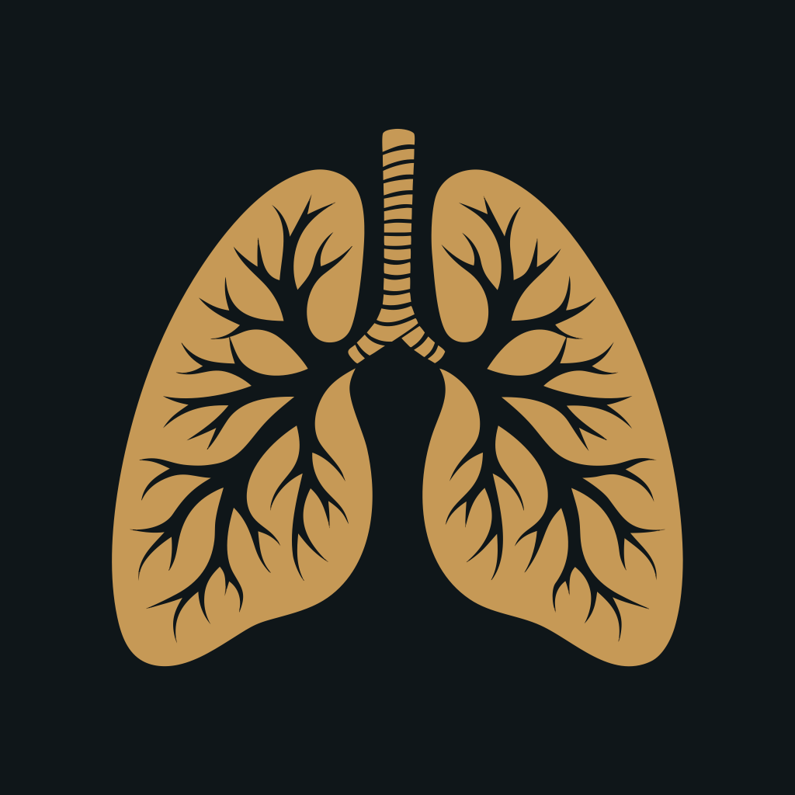

Screenshot the container below at exactly 1200x630. In Chrome DevTools, use Ctrl+Shift+P and search "Capture node screenshot", then click on the .og-container element. Or use a browser extension that supports element-level screenshots.

Breathwork for your nervous system
groundapp.live